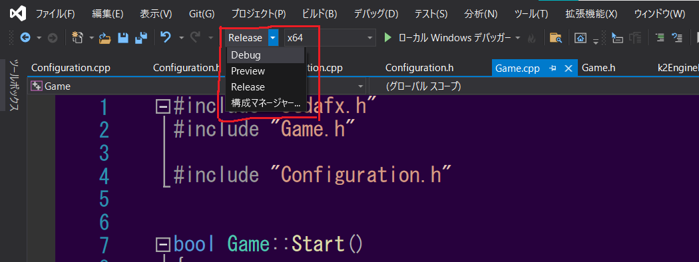
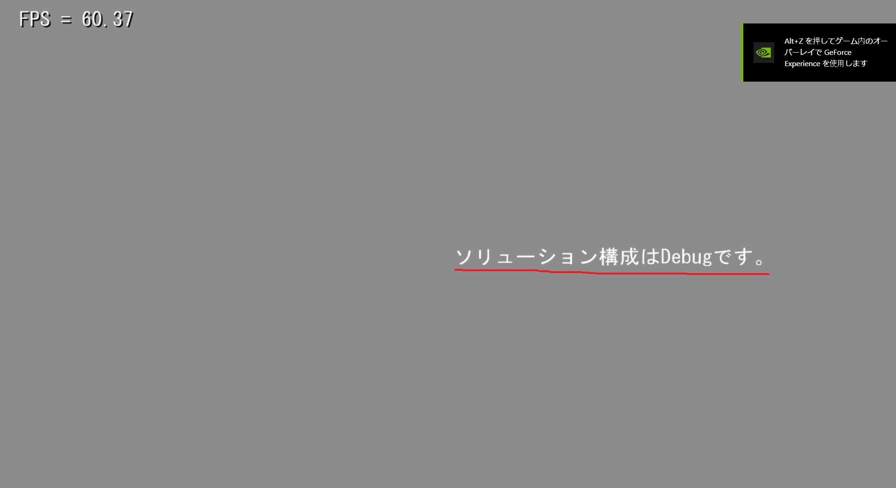
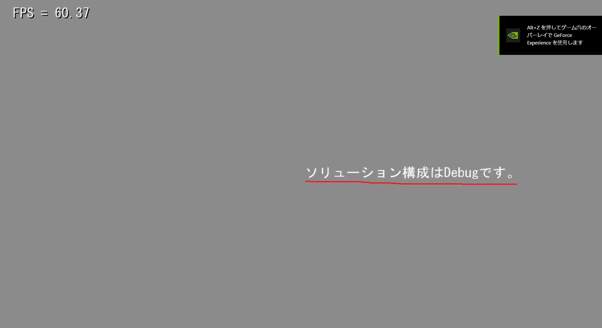

5.1 Singletonパターン
- //ファイルの読み書きをするクラス。
- class FileSystem
- {
- private:
- //外部からインスタンスを作成できないように。
- //コンストラクタをprivateにする。
- FileSystem(){}
- public:
- //グローバルかついつでもアクセス可能な。
- //関数。
- static FileSystem* GetInstance()
- {
- //ローカルstatic変数の初期化は。
- //関数が呼ばれた際の一度しか行われない。
- static FileSystem instance;
- return &instance;
- }
- };
5.2 その他メリット
- 関数が呼び出されなければ、インスタンスは生成されない 上記のstatic変数は関数が呼び出されなければ、生成されません。つまり、インスタンスが必要になるその時まで、インスタンスは生成されないということです(メモリの節約)。
- インスタンスの初期化は、関数が呼び出された際に実行される 通常のグローバル変数やstaticメンバ変数では、main関数が呼び出される前に初期化されてしまいます。なので、ゲームが実行されて必要な情報が揃ってからの初期化をすることができません。 ですが、Singletonパターンであれば、必要な情報が揃ってからのインスタンスの初期化が可能です。
- 継承クラスインスタンス生成のカプセル化 これは強力であるのに対し、しばしば見過ごされがちな使い方です。こちらに関しては、実例を見ていきましょう。
- //ファイルシステムクラス。
- class FileSystem
- {
- //...
- }
- //PS5用のファイルシステムクラス。
- class PlayStation5FileSystem : public FileSystem
- {
- //...
- }
- //NintendoSwitch用のファイルシステムクラス。
- cass NintendoSwitchFileSystem : public FileSystem
- {
- //...
- }
- {
- //プラットフォームがPS5なら。
- #if PLATFORM == PLAYSTATION5
- //PS5用のファイルシステムインスタンスを生成。
- m_fileSystem = new PlayStation5FileSystem;
- //プラットフォームがNintendoSwitchなら。
- #elif PLATFORM == NINTENDOSWITCH
- //NintendoSwitch用のファイルシステムインスタンスを生成。
- m_fileSystem = new NintendoSwitchFileSystem;
- #endif
- }
- //インスタンスの生成に、Singletonパターンを活用。
- FileSystem* FileSystem::GetInstance()
- {
- //プラットフォームがPS5なら。
- #if PLATFORM == PLAYSTATION5
- //PS5用のファイルシステムインスタンスを生成。
- static FileSystem* instance; = new PlayStation5FileSystem;
- //プラットフォームがNintendoSwitchなら。
- #elif PLATFORM == NINTENDOSWITCH
- //NintendoSwitch用のファイルシステムインスタンスを生成。
- static FileSystem* instance; = new NintendoSwitchFileSystem;
- #endif
- return instance;
- }
5.3 練習問題1
- bool Game::Start()
- {
- #ifdef _DEBUG
- m_configuration = new DebugConfiguration();
- #endif
- #ifdef _RELEASE
- m_configuration = new ReleaseConfiguration();
- #endif
- m_fontRender.SetText(m_configuration->GetSolutionConfiguration().c_str());
- return true;
- }
- Answerに実装例がありますので、参考にしてください。
5.4 Singletonパターンの使用をためらう理由
- バグ探しの難易度が上がる グローバル変数はその性質上、様々な要素から1つのインスタンスにアクセスが集中することになります。もし、変数に異常が見つかった場合、全てのグローバル変数を利用した関数呼び出しの中から、たった一箇所の誤りを探さなければなりません。 何百万というコードの中から、関数呼び出しの箇所を検索しなければならない状況に陥れば＿＿＿＿＿＿誰だって、グローバル変数が大嫌いになるでしょう。
- コードの結合度が上がる グローバル変数はその特性上、ファイルをincludeすれば如何なるクラスからも容易にインスタンスへのアクセスが可能になってしまいます。 物理処理の中でサウンドを鳴らすという、物理シミュレーションとサウンド処理が結合してしまうことが、起こってしまうのです。 これらの問題は、インスタンスへのアクセスを制限することで解決できます。
- マルチスレッドの妨げになる CPUがコア1つで動いている時代はとうの昔に過ぎ去りました。今はマルチスレッドが当たり前の時代になっています。 あるインスタンスをグローバルにするということは、全ての要素からアクセス可能な領域を作るということです。あるスレッドで、グローバル変数にアクセスしたとしましょう。 しかし、そのあるスレッドからは、他のスレッドがどのようにグローバル変数を扱っているか、知る由もありません。 その場合、デッドロックや競合などといった、修正の大変難しいバグが発生することになります。
- 遅延初期化による制御困難 Singletonパターンでは、static変数の初期化が関数が呼び出された際に実行されます。これはSingletonパターンの利点でもあり欠点でもあるのです。
- class FileSystem
- {
- public:
- static FileSystem& GetInstance()
- {
- return m_instance;
- }
- private:
- FileSystem(){}
- //静的メンバ変数、プログラム実行と同時に初期化される。
- static FileSystem m_instance;
- };
5.5 代替手段
- クラスの必要性 Singletonパターンが使用されるクラスは、オブジェクトのお世話をするだけの「マネージャークラス」であることが多いです。 SoundManager、MonsterManagerといった具合です。時にはManagerの部分がSystemやEngineになっていることもありますが、同じ事です。 次のManagerクラスを見てください。
- //Bullet(弾)クラスをお世話するクラス。
- class BulletManager
- {
- public:
- //弾を指定位置に作成する。
- Bullet* CreateBullet(Vector3& position)
- {
- Bullet bullet = new Bullet();
- bullet->SetPosition(position);
- return bullet;
- }
- //指定された弾を移動させる。
- void MoveBullet(Bullet* bullet)
- {
- Vector3 position = bullet->GetPosition();
- position.z += 10.0f;
- bullet->SetPosition(position);
- }
- //...
- };
- class Bullet
- {
- public:
- //コンストラクタ。 これは初期化子リスト。
- Bullet(Vector3& position) : m_position(position)
- {
- }
- //弾を移動させる。
- void Move()
- {
- m_position.z += 10.0f;
- }
- private:
- //座標。
- Vector3 m_position;
- };
- インスタンス生成を1個に制限 Singletonパターンを使用する目的として、インスタンス生成の個数を1個に制限したいというものがあります。 Singletonパターンでは、グローバルなアクセスポイントを提供してしまいますが、単にインスタンス生成を1個に制限する方法ならあります。
- class FileSystem
- {
- public:
- FileSystem()
- {
- //既にインスタンスが生成されていれば。
- //プログラムを強制終了させる。
- assert(!m_instantiated);
- m_instantiated = true;
- }
- ~FileSystem()
- {
- m_instantiated = false;
- }
- private:
- //インスタンスが生成されればtrue。
- static bool m_instantiated = false;
- }
- 引数渡し もっとも単純かつ大抵の場合に最良の解決策であるのが、インスタンスを必要としている関数に引数として渡してやることです。
- //ゲームオブジェクト。
- class GameObject
- {
- public:
- //..
- //描画する関数。
- //contextが描画に必要なインスタンス。
- void Draw(Context& context)
- {
- }
- //..
- };
- {
- for (GameObject* gameObject : m_gameObjectList)
- {
- //関数に、描画に必要なcontextを渡す。
- gameObject->Draw(m_context)
- }
- }
- 基底クラスから取得する ゲームのアーキテクチャ(構造)の多くは浅く広い継承階層であり、2階層だけということがよくあります。 例えば、基底クラスGameObjectがありゲームに登場するオブジェクトは全てそこから派生したクラスで構成されている場合です。 そのような構造では、ゲームに登場するオブジェクトが基底クラスであるGameObjectにアクセスできるようになっています。それを利用すればいいのです。
- //基底クラス。
- class GameObject
- {
- protected:
- Log* GetLog()
- {
- return &m_log;
- }
- private:
- //ログを出力するクラス。
- static Log m_log;
- };
- //敵クラス。
- //GameObjectを継承。
- class Enemy : public GameObject
- {
- void Attack()
- {
- //攻撃したというログを出力する。
- GetLog.Write("Enemy attacked!");
- }
- };
- 他のグローバルなクラスから取得する グローバル変数を無くそうという取り組み自体は素晴らしいものですが、大抵のコードにはグローバルにアクセス可能なクラスが存在します。 GameやWorldクラスなど、インスタンスが1つしか存在しないクラスがこれにあたります。
- //ゲーム中に1つしか存在しないクラス。
- class Game
- {
- public:
- static Game* GetInstance()
- {
- return &m_instance;
- }
- //Logを取得する。
- Log* GetLog()
- {
- return m_log;
- }
- //FileSystemを取得する。
- FileSystem* GetFileSystem
- {
- return m_fileSystem;
- }
- private:
- //Gameのインスタンス。
- static Game m_instance;
- Log* m_log;
- FileSystem* m_fileSystem;
- };
5.6 最後に
- Singletonパターンを使用する前に、Singletonパターンを何故使用したいかという目的を考えましょう(インスタンスを1つにしたい、グローバルなアクセスポイントが欲しい)。
- Singletonパターンに代わる代替え手段がないか模索しましょう(安易なグローバルなアクセスポイントの作成は、問題を起こします)。
5.7 練習問題2
- GameObject、Game、Actor、EnemyクラスでそれぞれGraphicsEngineを使用しているので、そちらも変更してください。
- assertマクロの基本的な使い方
- 静的メンバ変数の初期化
- Answerに実装例がありますので、参考にしてください。
第五章では、Singletonパターンについて学んでいきましょう。
Singletonパターンとは、そのクラスのインスタンスが1つしかないことを保証し、グローバルなアクセスポイントを提供するデザインパターンの1つです。 ゲーム開発では、エンジンクラスなど1つしかインスタンスが存在しない・してはいけないクラスを作成する際に使用されます。
Singletonパターンとは、そのクラスのインスタンスが1つしかないことを保証し、グローバルなアクセスポイントを提供するデザインパターンの1つです。 ゲーム開発では、エンジンクラスなど1つしかインスタンスが存在しない・してはいけないクラスを作成する際に使用されます。
一般的なSingletonパターンの実装例はこのようになります。
「インスタンスが1つであることを保障する」、「グローバルなアクセスポイントを提供する」、この2つがSingletonパターンの特徴になりますが、他にもメリットが存在します。
順に見ていきましょう。
Nintendo Switch、PS5などで発売予定のクロスプラットフォームゲームでの、ファイル読み書きを行うファイルシステムクラスを想像してみてください。
実装するとしたらこのような感じでしょうか。
しかし、#if文がプログラムのあちらこちらに点在するのはよろしくありません。もし、対応プラットフォームが増えれば、それだけ#if文を増やさなければなりません。
ここで、Singletonパターンに注目してみましょう。Singletonパターンでは、インスタンスの生成を関数の中で行っています。この関数を利用しましょう。
インスタンス生成の処理を、FileSystemクラス内にカプセル化することに成功しました。
プラットフォームが何であろうと、FileSystem::GetInstance関数を呼び出すだけで、プラットフォームに対応したFileSystemクラスにアクセスすることができるようになりました。
インスタンスにはどこからでもアクセス可能ですし、利用者側からはインスタンスの生成が隠蔽されています。
Singletonパターンを利用することによって、これ以上ない最上の実装を行うことができました。さあ、今日の仕事は終わりにして、ビールで乾杯しましょう!
practice/Singleton/Practice1/Game.slnからVisualStudioを立ち上げてください。
ソリューション構成によって、画面に文字が表示されます。



また、Gameクラスでソリューション構成を表すクラスを、ソリューション構成に合わせて生成しています。
ソリューション構成を表すConfigurationクラスを、Singletonパターンで実装してください。
Gameクラスで実装しているこれらのソリューション構成ごとのインスタンス生成を、Configurationクラス内で行うようにしてください。
Gameクラスで実装しているこれらのソリューション構成ごとのインスタンス生成を、Configurationクラス内で行うようにしてください。
ここまでSingletonパターンの素晴らしさを力説してきましたが、Singletonパターンには幾つかの問題点が存在します。
Singletonパターンは、言ってしまえばグローバル変数をカプセル化しただけのものですので、本質的にはグローバル変数と何ら変わりません。 そして、グローバル変数には下記のような問題点が存在します。
Singletonパターンは、言ってしまえばグローバル変数をカプセル化しただけのものですので、本質的にはグローバル変数と何ら変わりません。 そして、グローバル変数には下記のような問題点が存在します。
また、Singletonパターンならではの問題点も存在します。
ゲーム開発においては、フレームレートを落とさないために、また限られたメモリを上手く使用するために、メモリの割り当て・リソースの読み込みについては大変気を付けなければなりません。 例えば、サウンドが最初に出力される際にサウンドシステムの初期化を行ってしまうと(それはゲームの最中でしょう)、フレームレートが落ちたり動きがギクシャクしてしまうかもしれません。 また、サウンドシステムの初期化にヒープ(メモリ領域の1つ)上に大きなブロックを確保する必要があるのであれば、ヒープのどの位置に確保されるのかを制御するために初期化の正確な時期を知る必要があります。 この問題が発生するがために、以下のようなSingletonパターンを実装します。
これらの問題点を解決するために、Singletonパターンに変わる代替手段を幾つか提示しましょう。
このコードを見れば、BulletManagerはSingletonにしようと思うのは当然です。では、最終的にBulletManagerのインスタンスは幾つ必要でしょうか。
答えは「0」です。
答えは「0」です。
如何でしょうか。マネージャークラスはありませんが、問題ありません。マネージャークラスは、対象クラスの「ヘルパークラス」であることがよく見られます。
可能であれば、その「ヘルプ」機能を対象クラスに移動させてしまいましょう。
そもそもOOP(オブジェクト指向プログラミング)というのは、クラスにクラス自身のお世話をさせるというものなのです。
オブジェクトを描画する関数を考えてみましょう。描画のためには、画像デバイスや描画状態の管理が必要です。描画関係全ての関数にそういったものを、引数として渡すのが一般的です(パラメータ名はcontextのようなものがよく使われます)。
だからといって、何でもかんでも引数で渡せば良いというワケではありません。例えば、描画関数の主目的は描画をすることです。
そこに、ログを出力するための引数を設定するのは、違和感があるでしょう。この場合は、別選択肢の考慮が必要になってきます。
これで、GameObject外にあるオブジェクトはLogクラスに一切のアクセスが出来なくなりますが、GameObjectの派生クラスであればアクセスすることができます。
そのクラスを通じて、LogやFileSystemといったクラスにアクセスするようにしてみましょう。
第五章は長々となってしまいましたが、伝えたいことは2つです。
practice/Singleton/Practice2/Game.slnからVisualStudioを立ち上げてください。
実行すると、以下のようなゲームが起動します。
キーボードの矢印キーで「P」が移動します。「E」に追いつかれたらGameOverです。 一定時間逃げ切ったらGameClearです。

キーボードの矢印キーで「P」が移動します。「E」に追いつかれたらGameOverです。 一定時間逃げ切ったらGameClearです。
GraphicsEngineクラスのインスタンスを1つに制限してください。
GraphicsEngineクラスのインスタンスをグローバル変数として使用していますが、 GameObjectクラスのprivate静的メンバ変数にして、GameObjectクラス及びその派生クラスからのみアクセス可能にしてください。
GraphicsEngineクラスのインスタンスをグローバル変数として使用していますが、 GameObjectクラスのprivate静的メンバ変数にして、GameObjectクラス及びその派生クラスからのみアクセス可能にしてください。